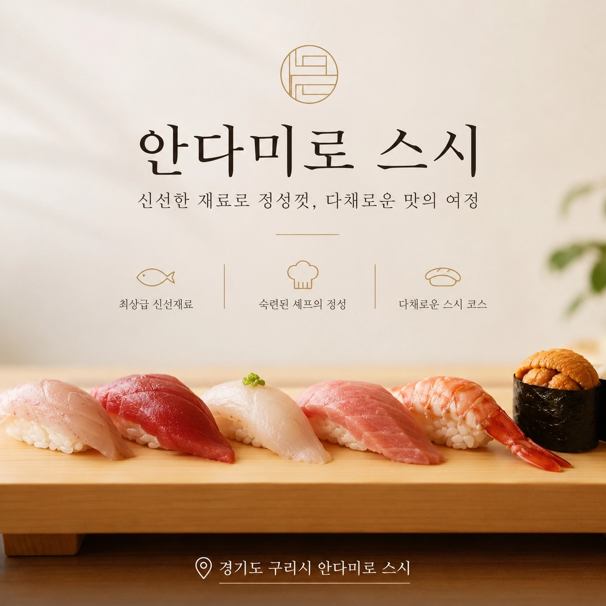

웨이팅이 아깝지 않은
완벽한 식사
- 주소
- 경기 구리시 경춘로266번길 10 1층
- 네이버 플레이스
- 매장 정보 확인하기
- 홍보 대상
- 안다미로 스시를 방문하고 QR을 확인한 실제 고객
- 노출 방식
- 가족가게 내 QR을 통해 이웃가게 소개 콘텐츠 노출
안다미로 스시를 방문한 실제 고객에게 우리 가게를 자연스럽게 소개합니다. 가까운 거리의 고객을 방문으로 연결하는 로컬 홍보를 시작해 보세요.

매장 정보
가족가게의 실제 방문 흐름을 활용해, 같은 생활권 안의 이웃가게를 고객에게 소개합니다.
홍보 방식
QR을 스캔하면 가까운 이웃가게의 홍보 콘텐츠가 표시됩니다. 두레가 가게 정보와 메시지를 보기 좋게 구성합니다.
함께하고 있는 이웃가게
음식점과 자연스럽게 이어지는 카페, 운동, 교육, 체험형 매장을 중심으로 다양한 로컬 업종이 참여할 수 있습니다.